JEE Main 2024 (Session 1), 31 Jan Shift 1: worked solutions for review
Questions and options are NTA’s own images; the green option is NTA’s final key. Every solution below was written by Claude
and checked against NTA’s final key. It is not NTA’s solution. Please mark anything unclear or wrong.
Q1 · Mathematics · MCQ · ID 4058591105
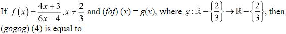
(2) 
Hint 1: Work out f(f(x)) and simplify. What do you notice?
Hint 2: 4f + 3 = 34x/(6x − 4) and 6f − 4 = 34/(6x − 4).
What this tests: Composition of functions; self-inverse functions.
1. f(f(x)) = x, so g(x) = x (f is its own inverse).
2. (g∘g∘g)(4) = 4.
Answer: (2)
If this felt hard: Revise 'Relations and Functions'.
Claude’s answer: 2 · NTA final key: 2 · agrees · Answer recomputed with SymPy (tools/verify_pyq_solutions.py)
Q2 · Mathematics · MCQ · ID 4058591106
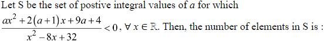
(1) 
(2) 
(3) 
(4)
Hint 1: Is the denominator ever negative? Then what must the numerator do for every x?
Hint 2: x² − 8x + 32 has discriminant 64 − 128 < 0, so it is always positive. The numerator must be negative for all x.
What this tests: Sign of a quadratic for all real x.
1. ax² + 2(a + 1)x + 9a + 4 < 0 for all x needs a < 0 (and a negative discriminant).
2. No positive integer a works, so S is empty.
Answer: (3)
If this felt hard: Revise 'Quadratic Equations' (quadratic always negative).
Claude’s answer: 3 · NTA final key: 3 · agrees · Answer recomputed with SymPy (tools/verify_pyq_solutions.py)
Q3 · Mathematics · MCQ · ID 4058591107
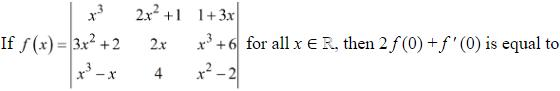
(1) 
(2) 
(3) 
Hint 1: f(0) is a numerical determinant. For f'(0), differentiate one row at a time and add the three determinants.
Hint 2: f(0) = det[[0, 1, 1], [2, 0, 6], [0, 4, −2]].
What this tests: Differentiation of a determinant.
1. f(0) = −1(−4) + 1(8) = 12.
2. f'(0) = sum of the three determinants with one row differentiated, at x = 0: this gives 18.
3. 2f(0) + f'(0) = 24 + 18 = 42.
Answer: (3)
If this felt hard: Revise 'Determinants' and 'Continuity and Differentiability'.
Claude’s answer: 3 · NTA final key: 3 · agrees · Answer recomputed with SymPy (tools/verify_pyq_solutions.py)
Q4 · Mathematics · MCQ · ID 4058591108
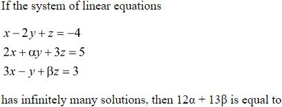
(1) 
(3)
Hint 1: Infinitely many solutions: the third equation must be a combination aR1 + bR2 of the first two, right-hand sides included.
Hint 2: x-coefficients: a + 2b = 3. Right-hand sides: −4a + 5b = 3.
What this tests: Systems with infinitely many solutions.
1. a = 9/13, b = 15/13.
2. y: −2a + αb = −1 gives α = 1/3. z: a + 3b = β gives β = 54/13.
3. 12α + 13β = 4 + 54 = 58.
Answer: (2)
If this felt hard: Revise 'Determinants'.
Claude’s answer: 2 · NTA final key: 2 · agrees · Answer recomputed with SymPy (tools/verify_pyq_solutions.py)
Q5 · Mathematics · MCQ · ID 4058591109
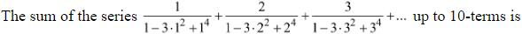
Hint 1: Factor 1 − 3n² + n⁴ as a difference of squares: (n² − 1)² − n².
Hint 2: n/((n² − n − 1)(n² + n − 1)) = (1/2)[1/(n² − n − 1) − 1/(n² + n − 1)], and n² + n − 1 is the next term's n² − n − 1.
What this tests: Telescoping series.
1. The sum telescopes: (1/2)[1/(1 − 1 − 1) − 1/(100 + 10 − 1)].
2. = (1/2)(−1 − 1/109) = −55/109.
Answer: (3)
If this felt hard: Revise 'Sequences and Series'.
Claude’s answer: 3 · NTA final key: 3 · agrees · Answer recomputed with SymPy (tools/verify_pyq_solutions.py)
Q6 · Mathematics · MCQ · ID 4058591110
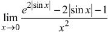
Hint 1: Put u = |sin x|, which is small. Expand e2u up to u².
Hint 2: e2u = 1 + 2u + 2u² + …, so the numerator ≈ 2u² = 2sin²x.
What this tests: Limits using series expansions.
1. Limit = 2 sin²x/x² → 2.
2. The |…| does not matter because only u² survives.
Answer: (1)
If this felt hard: Revise 'Limits and Derivatives'.
Claude’s answer: 1 · NTA final key: 1 · agrees · Answer recomputed with SymPy (tools/verify_pyq_solutions.py)
Q7 · Mathematics · MCQ · ID 4058591111
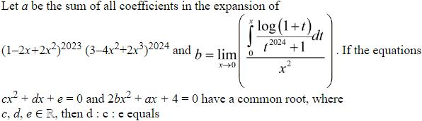
(1)
Hint 1: a = value of the product at x = 1. For b, the integrand is about t near 0.
Hint 2: a = 12023 × 12024 = 1. b = lim (x²/2)/x² = 1/2. The second equation becomes x² + x + 4 = 0.
What this tests: Common roots of quadratics; limits of integrals.
1. x² + x + 4 = 0 has non-real roots, and a real quadratic with one non-real common root shares both roots.
2. So cx² + dx + e is a multiple of x² + x + 4: c : d : e = 1 : 1 : 4.
3. d : c : e = 1 : 1 : 4.
Answer: (2)
If this felt hard: Revise 'Quadratic Equations' and 'Complex Numbers'.
Claude’s answer: 2 · NTA final key: 2 · agrees · Answer recomputed with SymPy (tools/verify_pyq_solutions.py)
Q8 · Mathematics · MCQ · ID 4058591112
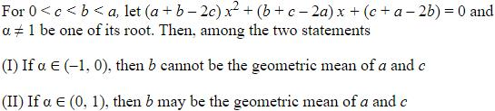
(4) 
Hint 1: The coefficients add up to 0, so x = 1 is a root. Write the other root α.
Hint 2: α = (c + a − 2b)/(a + b − 2c), and the denominator is positive since a, b > c.
What this tests: Roots of a quadratic; AM–GM inequality.
1. α < 0 means c + a − 2b < 0, i.e. b > (a + c)/2 ≥ √(ac). So b cannot be the GM: I is true.
2. α in (0, 1) only means b < (a + c)/2, which allows b = √(ac): II is true.
Answer: (3)
If this felt hard: Revise 'Quadratic Equations' and 'Sequences and Series' (AM ≥ GM).
Claude’s answer: 3 · NTA final key: 3 · agrees · Answer recomputed with SymPy (tools/verify_pyq_solutions.py)
Q9 · Mathematics · MCQ · ID 4058591113
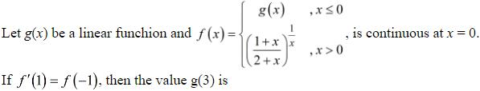
Hint 1: Find f(0⁺) first: the base tends to 1/2 and the power to +∞. That fixes g(0).
Hint 2: f(0⁺) = 0, so g(x) = kx. For x > 0, take logs: ln f = (1/x) ln((1 + x)/(2 + x)).
What this tests: Continuity; logarithmic differentiation.
1. At x = 1: f = 2/3 and f'/f = −ln(2/3) + (1/2 − 1/3) = ln(3/2) + 1/6.
2. f'(1) = (2/3)(ln(3/2) + 1/6) = f(−1) = −k.
3. g(3) = 3k = −2 ln(3/2) − 1/3 = ln(4/9) − 1/3 = loge(4/(9e1/3)).
Answer: (2)
If this felt hard: Revise 'Continuity and Differentiability'.
Claude’s answer: 2 · NTA final key: 2 · agrees · Answer recomputed with SymPy (tools/verify_pyq_solutions.py)
Q10 · Mathematics · MCQ · ID 4058591114
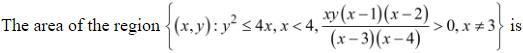
Hint 1: Make a sign chart of x(x − 1)(x − 2)/((x − 3)(x − 4)) on (0, 4). Where must y be positive and where negative?
Hint 2: On (0, 1) and (2, 3) the fraction is positive, so y > 0; on (1, 2) and (3, 4) it is negative, so y < 0. Each piece is one half of the parabola region.
What this tests: Area with a sign condition.
1. In every strip the area is ∫ 2√x dx (one half of y² ≤ 4x).
2. Total = ∫04 2√x dx = (4/3) × 8 = 32/3.
Answer: (3)
If this felt hard: Revise 'Application of Integrals' and sign charts.
Claude’s answer: 3 · NTA final key: 3 · agrees · Answer recomputed with SymPy (tools/verify_pyq_solutions.py)
Q11 · Mathematics · MCQ · ID 4058591115
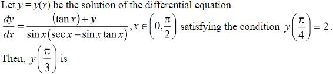
Hint 1: Simplify the denominator first: sin x(sec x − sin x tan x).
Hint 2: sin x(sec x − sin x tan x) = tan x(1 − sin²x) = sin x cos x. Then dy/dx − y/(sin x cos x) = sec²x, a linear equation with integrating factor cot x.
What this tests: Linear differential equation.
1. (y cot x)' = sec²x cot x = 1/(sin x cos x), so y cot x = ln tan x + C.
2. y(π/4) = 2 gives C = 2.
3. At π/3: y/√3 = ln √3 + 2, so y = √3(2 + loge√3).
Answer: (3)
If this felt hard: Revise 'Differential Equations'.
Claude’s answer: 3 · NTA final key: 3 · agrees · Answer recomputed with SymPy (tools/verify_pyq_solutions.py)
Q12 · Mathematics · MCQ · ID 4058591116
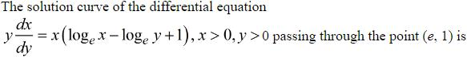
Hint 1: The right side depends on x/y. Substitute x = vy.
Hint 2: dx/dy = v + y dv/dy. The equation becomes y dv/dy = v ln v.
What this tests: Homogeneous differential equation.
1. dv/(v ln v) = dy/y gives ln|ln v| = ln y + C, so ln v = ky.
2. Through (e, 1): v = e, so k = 1.
3. |loge(x/y)| = y.
Answer: (4)
If this felt hard: Revise 'Differential Equations'.
Claude’s answer: 4 · NTA final key: 4 · agrees · Answer recomputed with SymPy (tools/verify_pyq_solutions.py)
Q13 · Mathematics · MCQ · ID 4058591117
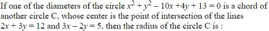
(2) 
(3)
(4) 
Hint 1: A chord's perpendicular from the centre lands at the chord's midpoint. Here the chord's midpoint is the first circle's centre.
Hint 2: First circle: centre (5, −2), radius 4. Centre of C: (3, 2), from the two lines. R² = (half-chord)² + d².
What this tests: Chord of a circle; perpendicular from the centre.
1. d² = 2² + 4² = 20.
2. R² = 16 + 20 = 36, so R = 6.
Answer: (2)
If this felt hard: Revise 'Conic Sections' (circle).
Claude’s answer: 2 · NTA final key: 2 · agrees · Answer recomputed with SymPy (tools/verify_pyq_solutions.py)
Q14 · Mathematics · MCQ · ID 4058591118
(1) 
(2) 
(3) 
(4) 
Hint 1: List integer points on 3y = 2x + 1 near B and test AB² = 10.
Hint 2: Integer points: (1, 1), (−2, −1), (4, 3), … In a parallelogram ABCD, C = B + D − A.
What this tests: Coordinates of a parallelogram; integer points on a line.
1. (−2, −1): (−3)² + (−1)² = 10. So A = (−2, −1).
2. C = (1, 0) + (1, 2) − (−2, −1) = (4, 3), which is on the line too.
3. 2(α + β + γ + δ) = 2(−2 − 1 + 4 + 3) = 8.
Answer: (2)
If this felt hard: Revise 'Straight Lines'.
Claude’s answer: 2 · NTA final key: 2 · agrees · Answer recomputed with SymPy (tools/verify_pyq_solutions.py)
Q15 · Mathematics · MCQ · ID 4058591119
(1)
(2)
(3)
(4)
Hint 1: The line is perpendicular to both directions, so its direction is their cross product.
Hint 2: (2, 3, 5) × (−1, 3, 2) = (−9, −9, 9), i.e. direction (1, 1, −1). Distance = |PQ × d|/|d|.
What this tests: Distance from a point to a line in 3D.
1. PQ = (−5, 6, −5). PQ × (1, 1, −1) = (−1, −10, −11), length² 222.
2. Distance² = 222/3 = 74, so the distance is √74.
Answer: (2)
If this felt hard: Revise 'Three Dimensional Geometry'.
Claude’s answer: 2 · NTA final key: 2 · agrees · Answer recomputed with SymPy (tools/verify_pyq_solutions.py)
Q16 · Mathematics · MCQ · ID 4058591120
(1)
(2)
(3)
(4)
Hint 1: The ellipse's major axis is along y (25 > 9). Find its foci and eccentricity, then build the hyperbola.
Hint 2: Ellipse: e = 4/5, foci (0, ±4). Hyperbola: e = (15/8)(4/5) = 3/2, foci (0, ±4), so its semi-transverse axis is 4/e = 8/3 (along y). Focal distances of (x, y) are |ey ∓ 8/3|.
What this tests: Focal distances on a hyperbola.
1. ey = (3/2)(14/3)√(2/5) = 7√(2/5).
2. Smaller focal distance = 7√(2/5) − 8/3.
Answer: (3)
If this felt hard: Revise 'Conic Sections'. Check which axis is the major one first.
Claude’s answer: 3 · NTA final key: 3 · agrees · Answer recomputed with SymPy (tools/verify_pyq_solutions.py)
Q17 · Mathematics · MCQ · ID 4058591121
(1)
(2)
(3)
(4)
Hint 1: List the values of x (0, 1, 2) and their probabilities.
Hint 2: P(0) = C(15, 2)/C(18, 2), P(1) = 3 × 15/C(18, 2), P(2) = C(3, 2)/C(18, 2), with C(18, 2) = 153.
What this tests: Mean and variance of a discrete random variable.
1. P(0) = 105/153, P(1) = 45/153, P(2) = 3/153.
2. E(x) = 51/153 = 1/3; E(x²) = 57/153.
3. Var = 57/153 − 1/9 = 40/153.
Answer: (2)
If this felt hard: Revise 'Probability' (random variables).
Claude’s answer: 2 · NTA final key: 2 · agrees · Answer recomputed with SymPy (tools/verify_pyq_solutions.py)
Q18 · Mathematics · MCQ · ID 4058591122
(1) 
(2) 
(3)
(4) 
Hint 1: Rewrite p × b = c × b as (p − c) × b = 0. What does that say about p − c?
Hint 2: p = c + tb. Use p·a = 0 to find t: c·a = −8, b·a = −1.
What this tests: Vector equations with cross products.
1. −8 − t = 0, so t = −8 and p = c − 8b = (−31, −11, −52).
2. p·(1, −1, −1) = −31 + 11 + 52 = 32.
Answer: (4)
If this felt hard: Revise 'Vector Algebra'.
Claude’s answer: 4 · NTA final key: 4 · agrees · Answer recomputed with SymPy (tools/verify_pyq_solutions.py)
Q19 · Mathematics · MCQ · ID 4058591123
(1)
(2)
(3)
(4)
Hint 1: With replacement, the draws are independent.
Hint 2: Total marbles = 75. P(red) = 10/75, P(white) = 30/75.
What this tests: Independent events.
1. P = (10/75)(30/75) = 4/75.
Answer: (3)
If this felt hard: Revise 'Probability'.
Claude’s answer: 3 · NTA final key: 3 · agrees · Answer recomputed with SymPy (tools/verify_pyq_solutions.py)
Q20 · Mathematics · MCQ · ID 4058591124
(1)
(2)
(3)
(4)
Hint 1: Expand the condition: (α + β)² − γ² = 3αβ. Does it remind you of the cosine rule?
Hint 2: It becomes γ² = α² + β² − αβ = α² + β² − 2αβ cos 60°. With sin−1α + sin−1β + sin−1γ = π, think of α, β, γ as sin A, sin B, sin C of a triangle.
What this tests: Inverse trigonometric functions; sine and cosine rules.
1. By the sine rule, α, β, γ are proportional to the sides, so the cosine rule gives C = 60°.
2. γ = sin 60° = √3/2.
Answer: (1)
If this felt hard: Revise 'Inverse Trigonometric Functions' and properties of triangles.
Claude’s answer: 1 · NTA final key: 1 · agrees · Answer recomputed with SymPy (tools/verify_pyq_solutions.py)
Q21 · Mathematics · Numerical · ID 4058591125
Hint 1: An equivalence relation is a set of classes. Which elements does R force into the same class?
Hint 2: (1, 2), (2, 3), (1, 4) link 1–2–3 and 1–4, so 1, 2, 3, 4 are all in one class.
What this tests: Equivalence relations (smallest containing a given relation).
1. The smallest equivalence relation containing R is A × A.
2. n = 4² = 16.
Answer: 16
If this felt hard: Revise 'Relations and Functions'.
Claude’s answer: 16 · NTA final key: 16 · agrees · Answer recomputed with SymPy (tools/verify_pyq_solutions.py)
Q22 · Mathematics · Numerical · ID 4058591126
Hint 1: |1 − i| = √2. For z, notice that √π + i = i(1 − √π i).
Hint 2: (√2)x = 2x only for x = 0, so α = 1. Each fraction in the bracket equals −i, and (1 + i)⁴ = −4.
What this tests: Modulus and argument; distance from a point to a line.
1. z = (π/4)(−4)(−2i) = 2πi, so |z| = 2π and arg z = π/2: β = 4.
2. Distance of (1, 4) from 4x − 3y − 7 = 0: |4 − 12 − 7|/5 = 3.
Answer: 3
If this felt hard: Revise 'Complex Numbers' and 'Straight Lines'.
Claude’s answer: 3 · NTA final key: 3 · agrees · Answer recomputed with SymPy (tools/verify_pyq_solutions.py)
Q23 · Mathematics · Numerical · ID 4058591127
Hint 1: DISTRIBUTION has 12 letters: I three times, T twice, and D, S, R, B, U, O, N once each. Split by how letters repeat in the 4-letter word.
Hint 2: Cases: all different; one pair + two others; two pairs; three alike + one other.
What this tests: Arrangements with repeated letters.
1. All different (9 distinct letters): P(9, 4) = 3024.
2. One pair (I or T) + 2 others from 8: 2 × C(8, 2) × 4!/2! = 672.
3. Two pairs (I, I, T, T): 4!/(2!2!) = 6.
4. Three I's + one of 8 others: 8 × 4 = 32.
5. Total = 3734.
Answer: 3734
If this felt hard: Revise 'Permutations and Combinations'.
Claude’s answer: 3734 · NTA final key: 3734 · agrees · Answer recomputed with SymPy (tools/verify_pyq_solutions.py)
Q24 · Mathematics · Numerical · ID 4058591128
Hint 1: Recognise 1 + 3/x + 3/x² + 1/x³ as a cube.
Hint 2: It is (1 + 1/x)³, so the bracket is (1 + 1/x)15 = (1 + x)15/x15. The whole expression is (1 − x²)(1 + x)16/x15.
What this tests: Binomial theorem (spotting a binomial).
1. Coefficient of x³: coefficient of x18 in (1 − x²)(1 + x)16 = 0 − C(16, 16) = −1.
2. Coefficient of x−13: coefficient of x² = C(16, 2) − C(16, 0) = 119.
3. Sum = 118.
Answer: 118
If this felt hard: Revise 'Binomial Theorem'.
Claude’s answer: 118 · NTA final key: 118 · agrees · Answer recomputed with SymPy (tools/verify_pyq_solutions.py)
Q25 · Mathematics · Numerical · ID 4058591129
Hint 1: f'(x) is the integrand at x. f has an extremum only where f' changes sign: at roots of odd multiplicity.
Hint 2: Odd-power roots: x = 0, 1/2, 2, 5 (x = 3 has even power). f' > 0 for large x; the sign flips at each odd root.
What this tests: Local extrema from the sign of f' (first derivative test).
1. Signs from right to left: + on (5, ∞), − on (2, 5), + on (1/2, 2), − on (0, 1/2), + on (−1, 0).
2. Maxima at 0 and 2: p = 0 + 4 = 4. Minima at 1/2 and 5: q = 5.5.
3. p² + 2q = 16 + 11 = 27.
Answer: 27
If this felt hard: Revise 'Application of Derivatives'.
Claude’s answer: 27 · NTA final key: 27 · agrees · Answer recomputed with SymPy (tools/verify_pyq_solutions.py)
Q26 · Mathematics · Numerical · ID 4058591130
Hint 1: Check f(x) + f(1 − x). What does that tell you about the limits?
Hint 2: f(x) + f(1 − x) = 1, so the limits are f(a) and 1 − f(a), which add to 1. sin⁴(x(1 − x)) is unchanged when x → 1 − x.
What this tests: Definite integral property ∫ab f(x) dx = ∫ab f(a + b − x) dx.
1. With x → 1 − x: M = N − M, so M = N/2.
2. αM = βN gives α = 2β. Least: β = 1, α = 2.
3. α² + β² = 5.
Answer: 5
If this felt hard: Revise 'Integrals' (properties of definite integrals).
Claude’s answer: 5 · NTA final key: 5 · agrees · Answer recomputed with SymPy (tools/verify_pyq_solutions.py)
Q27 · Mathematics · Numerical · ID 4058591131
Hint 1: Write sin 2x = 2 sin x cos x and substitute t = cos x.
Hint 2: Integral = 525 × 2∫01 t13/2(1 + t5/2)1/2 dt. Then u = 1 + t5/2, du = (5/2)t3/2 dt, and t⁵ = (u − 1)².
What this tests: Definite integrals by substitution.
1. = 525 × (4/5)∫12 (u − 1)²√u du = 420[(2/7)u7/2 − (4/5)u5/2 + (2/3)u3/2] from 1 to 2.
2. = 420 × (44√2 − 16)/105 = 176√2 − 64.
3. n = 176.
Answer: 176
If this felt hard: Revise 'Integrals'.
Claude’s answer: 176 · NTA final key: 176 · agrees · Answer recomputed with SymPy (tools/verify_pyq_solutions.py)
Q28 · Mathematics · Numerical · ID 4058591132
Hint 1: Use ae = 5 and 2b²/a = √50, together with b² = a² − (ae)².
Hint 2: b² = (5√2/2)a and a² − b² = 25.
What this tests: Ellipse and hyperbola parameters.
1. a² − (5√2/2)a − 25 = 0 gives a = 5√2, so a² = 50 and b² = 25.
2. For x²/b² − y²/(a²b²) = 1: e² = 1 + a²b²/b² = 1 + a² = 51.
Answer: 51
If this felt hard: Revise 'Conic Sections'.
Claude’s answer: 51 · NTA final key: 51 · agrees · Answer recomputed with SymPy (tools/verify_pyq_solutions.py)
Q29 · Mathematics · Numerical · ID 4058591133
Hint 1: Find each foot of the perpendicular by making the vector from P perpendicular to the line's direction.
Hint 2: Line 1: (t, t, 1), direction (1, 1, 0) → Q = (a, a, 1). Line 2: (s, −s, −1), direction (1, −1, 0) → R = (0, 0, −1).
What this tests: Foot of a perpendicular; perpendicular vectors.
1. PQ = (0, 0, 1 − a), PR = (−a, −a, −1 − a).
2. PQ·PR = (1 − a)(−1 − a) = 0 gives a² = 1.
3. 12a² = 12.
Answer: 12
If this felt hard: Revise 'Three Dimensional Geometry'.
Claude’s answer: 12 · NTA final key: 12 · agrees · Answer recomputed with SymPy (tools/verify_pyq_solutions.py)
Note: a = 1 would make P = Q, so a = −1; either way a² = 1.
Q30 · Mathematics · Numerical · ID 4058591134
Hint 1: a × b is perpendicular to b. Use that to find b·c and |c|.
Hint 2: b·c = −3|b|² = −48. |a × b|² = |a|²|b|² − (a·b)² = 12. |c|² = 4 × 12 + 9 × 16.
What this tests: Dot and cross products.
1. |c|² = 192, |c| = 8√3.
2. cos α = −48/(4 × 8√3) = −√3/2, so sin²α = 1/4.
3. 192 sin²α = 48.
Answer: 48
If this felt hard: Revise 'Vector Algebra'.
Claude’s answer: 48 · NTA final key: 48 · agrees · Answer recomputed with SymPy (tools/verify_pyq_solutions.py)
Q31 · Physics · MCQ · ID 4058591135
(1)
(2)
(3)
(4)
Hint 1: Each term of F must have the dimensions of force. Find [a] and [b] separately.
Hint 2: [a] = [F]/L² = ML−1T−2. [b] = [F]/T1/2 = MLT−5/2.
What this tests: Dimensional analysis.
1. [b²/a] = M²L²T−5/(ML−1T−2) = ML³T−3.
Answer: (4)
If this felt hard: Revise 'Units and Measurements'.
Claude’s answer: 4 · NTA final key: 4 · agrees · Answer recomputed with SymPy (tools/verify_pyq_solutions.py)
Q32 · Physics · MCQ · ID 4058591136
(1)
(2)
(3)
(4)
Hint 1: Differentiate t = αx² + βx with respect to t to get v, then differentiate again.
Hint 2: 1 = (2αx + β)v, so 1/v = 2αx + β. Differentiate with respect to t: −(1/v²)a = 2αv.
What this tests: Kinematics with implicit differentiation.
1. a = −2αv³.
Answer: (1)
If this felt hard: Revise 'Motion in a Straight Line'.
Claude’s answer: 1 · NTA final key: 1 · agrees · Answer recomputed with SymPy (tools/verify_pyq_solutions.py)
Q33 · Physics · MCQ · ID 4058591137
(1)
(2)
(3)
(4)
Hint 1: Friction provides the centripetal force. What is its largest possible value?
Hint 2: μmg ≥ mω²r.
What this tests: Circular motion with friction.
1. ωmax = √(μg/r).
Answer: (2)
If this felt hard: Revise 'Laws of Motion'.
Claude’s answer: 2 · NTA final key: 2 · agrees · Answer recomputed with SymPy (tools/verify_pyq_solutions.py)
Q34 · Physics · MCQ · ID 4058591138
(1)
(2)
(3)
(4)
Hint 1: M moves down its 53° incline and m moves up the 37° one. Friction opposes the motion on both.
Hint 2: For M: Mg sin 53° − μMg cos 53° − T = Ma. For m: T − mg sin 37° − μmg cos 37° = ma. Use sin 53° = cos 37° = 4/5.
What this tests: Connected bodies on inclines with friction.
1. M: 80 − 15 − T = 20, so T = 45 N.
2. m: 45 − 6m − 2m = 2m, so m = 4.5 kg.
Answer: (1)
If this felt hard: Revise 'Laws of Motion'.
Claude’s answer: 1 · NTA final key: 1 · agrees · Answer recomputed with SymPy (tools/verify_pyq_solutions.py)
Q35 · Physics · MCQ · ID 4058591139
(1)
(2)
(3)
(4)
Hint 1: Momentum is conserved: both get equal and opposite momenta. How does KE depend on mass for a fixed momentum?
Hint 2: KE = p²/(2M).
What this tests: Recoil; momentum and kinetic energy.
1. KEartillery/KEshell = M2/M1.
Answer: (2)
If this felt hard: Revise 'Laws of Motion' and 'Work, Energy and Power'.
Claude’s answer: 2 · NTA final key: 2 · agrees · Answer recomputed with SymPy (tools/verify_pyq_solutions.py)
Q36 · Physics · MCQ · ID 4058591140
(1)
(2)
(3)
(4)
Hint 1: Add the forces from the two adjacent corners (perpendicular) and the opposite corner (along the diagonal).
Hint 2: With side a: two forces Gm²/a² at 90° give √2 Gm²/a² along the diagonal; the opposite one adds Gm²/(2a²).
What this tests: Superposition of gravitational forces.
1. Net = (Gm²/a²)(√2 + 1/2) = (2√2 + 1)Gm²/(2a²).
2. Setting this equal to (2√2 + 1)Gm²/(32L²) gives a² = 16L², so a = 4L.
Answer: (2)
If this felt hard: Revise 'Gravitation'.
Claude’s answer: 2 · NTA final key: 2 · agrees · Answer recomputed with SymPy (tools/verify_pyq_solutions.py)
Q37 · Physics · MCQ · ID 4058591141
(1)
(2)
(3)
(4)
Hint 1: As the ball speeds up, the viscous drag grows. What happens to the acceleration?
Hint 2: The drag (Stokes' law) rises with speed until it balances weight minus buoyancy: terminal velocity.
What this tests: Terminal velocity.
1. The velocity rises quickly at first, then more and more slowly, levelling off at the terminal velocity.
Answer: (3)
If this felt hard: Revise 'Mechanical Properties of Fluids' (viscosity).
Claude’s answer: 3 · NTA final key: 3 · agrees · Theory question: not computable, needs a teacher’s review
Q38 · Physics · MCQ · ID 4058591142
(1)
(2)
(3)
(4)
Hint 1: For an ideal gas at constant pressure, V = (nR/P)T. What does the slope tell you?
Hint 2: Slope of V–T = nR/P, so a steeper line means lower pressure.
What this tests: Isobaric processes on a V–T graph.
1. The P2 line is steeper, so P2 < P1.
Answer: (1)
If this felt hard: Revise 'Kinetic Theory' / 'Thermodynamics'.
Claude’s answer: 1 · NTA final key: 1 · agrees · Answer recomputed with SymPy (tools/verify_pyq_solutions.py)
Q39 · Physics · MCQ · ID 4058591143
(1)
(2)
(3)
(4)
Hint 1: What does temperature measure at the molecular level?
Hint 2: Average translational KE per molecule = (3/2)kBT, independent of the gas.
What this tests: Kinetic interpretation of temperature.
1. Kinetic energy (average) is the same for all gases at the same temperature.
2. Mass, speed and momentum depend on the molecule.
Answer: (4)
If this felt hard: Revise 'Kinetic Theory'.
Claude’s answer: 4 · NTA final key: 4 · agrees · Theory question: not computable, needs a teacher’s review
Q40 · Physics · MCQ · ID 4058591144
(1)
(2)
(3)
(4)
Hint 1: Both charges are positive. Where can their fields cancel: between them or outside?
Hint 2: Between them: kq/x² = k(3q)/(r − x)².
What this tests: Null point between two charges.
1. (r − x)² = 3x², so r − x = √3 x.
2. x = r/(1 + √3).
Answer: (3)
If this felt hard: Revise 'Electric Charges and Fields'.
Claude’s answer: 3 · NTA final key: 3 · agrees · Answer recomputed with SymPy (tools/verify_pyq_solutions.py)
Q41 · Physics · MCQ · ID 4058591145
(1)
(2)
(3)
(4)
Hint 1: Write R1 = R0(1 + α1t) and R2 = R0(1 + α2t). Combine them and read off the coefficient.
Hint 2: Series: R = R0(2 + (α1 + α2)t). Parallel: for small αt, R ≈ (R0/2)(1 + ((α1 + α2)/2)t).
What this tests: Temperature coefficient of combinations.
1. Series: 2R0(1 + ((α1 + α2)/2)t), so α = (α1 + α2)/2.
2. Parallel: also (α1 + α2)/2 (to first order).
Answer: (1)
If this felt hard: Revise 'Current Electricity'.
Claude’s answer: 1 · NTA final key: 1 · agrees · Answer recomputed with SymPy (tools/verify_pyq_solutions.py)
Q42 · Physics · MCQ · ID 4058591146
(1)
(2)
(3)
(4)
Hint 1: For a uniform field, the force on any wire equals the force on a straight wire joining its two ends. The two straight parts carry opposite currents.
Hint 2: The straight parts give equal and opposite forces. The semicircle acts like a straight wire of length 2R along x̂. F = i L × B, with B out of the page (the dots).
What this tests: Force on a current-carrying wire in a uniform field.
1. F = i(2R x̂) × (B ẑ) = 2iRB(x̂ × ẑ) = −2iBR ĵ.
Answer: (2)
If this felt hard: Revise 'Moving Charges and Magnetism'.
Claude’s answer: 2 · NTA final key: 2 · agrees · Answer recomputed with SymPy (tools/verify_pyq_solutions.py)
Note: The text says B = B_{0}ĵ, but the figure shows B out of the page (ẑ, the dots); NTA's key (−2iBRĵ) uses the figure.
Q43 · Physics · MCQ · ID 4058591147
(1)
(2)
(3)
(4)
Hint 1: emf = N × A × (rate of change of B).
Hint 2: A = π(0.01)² m², ΔB/Δt = 2000/2 = 1000 T/s.
What this tests: Faraday's law for a coil.
1. 22 = N × π × 10−4 × 1000 = 0.1πN.
2. N = 22/0.314 = 70.
Answer: (4)
If this felt hard: Revise 'Electromagnetic Induction'.
Claude’s answer: 4 · NTA final key: 4 · agrees · Answer recomputed with SymPy (tools/verify_pyq_solutions.py)
Note: Uses π = 22/7.
Q44 · Physics · MCQ · ID 4058591148
(1)
(2)
(3)
(4)
Hint 1: Total average energy density of an EM wave = (1/2)ε0E0² (electric and magnetic parts together).
Hint 2: Each part averages (1/4)ε0E0².
What this tests: Energy density of an EM wave.
1. u = 0.5 × 8.85 × 10−12 × 2500 = 1.106 × 10−8 J/m³.
Answer: (1)
If this felt hard: Revise 'Electromagnetic Waves'.
Claude’s answer: 1 · NTA final key: 1 · agrees · Answer recomputed with SymPy (tools/verify_pyq_solutions.py)
Q45 · Physics · MCQ · ID 4058591149
(1)
(2)
(3)
(4)
Hint 1: Use μ = sin((A + δm)/2)/sin(A/2) and write cot(A/2) as cos(A/2)/sin(A/2).
Hint 2: sin((A + δm)/2) = cos(A/2) = sin(90° − A/2).
What this tests: Prism at minimum deviation.
1. (A + δm)/2 = 90° − A/2.
2. δm = 180° − 2A.
Answer: (1)
If this felt hard: Revise 'Ray Optics and Optical Instruments'.
Claude’s answer: 1 · NTA final key: 1 · agrees · Answer recomputed with SymPy (tools/verify_pyq_solutions.py)
Q46 · Physics · MCQ · ID 4058591150
(1)
(2)
(3)
(4)
Hint 1: Write Einstein's equation eV0 = hc/λ − φ for both wavelengths.
Hint 2: 8 = hc/λ − φ and 2 = hc/(3λ) − φ (in eV).
What this tests: Photoelectric effect: threshold wavelength.
1. Subtract: (2/3)(hc/λ) = 6, so hc/λ = 9 eV and φ = 1 eV.
2. λ0 = hc/φ = 9λ.
Answer: (4)
If this felt hard: Revise 'Dual Nature of Radiation and Matter'.
Claude’s answer: 4 · NTA final key: 4 · agrees · Answer recomputed with SymPy (tools/verify_pyq_solutions.py)
Q47 · Physics · MCQ · ID 4058591151
(1)
(2)
(3)
(4)
Hint 1: Lyman lines end on n = 1. First member: 2 → 1. Second member: 3 → 1.
Hint 2: 1/λ ∝ (1 − 1/n²): 3/4 for the first, 8/9 for the second.
What this tests: Hydrogen spectrum (Lyman series).
1. λ2/λ = (3/4)/(8/9) = 27/32.
2. λ2 = (27/32)λ.
Answer: (1)
If this felt hard: Revise 'Atoms'.
Claude’s answer: 1 · NTA final key: 1 · agrees · Answer recomputed with SymPy (tools/verify_pyq_solutions.py)
Q48 · Physics · MCQ · ID 4058591152
(1) 
(2) 
(3)
(4) 
Hint 1: Each input passes through a NOT (the small circles) before the NAND gate.
Hint 2: Y = NOT(Ā · B̄). Use De Morgan's law.
What this tests: Logic gates; De Morgan's laws.
1. Y = A + B: an OR gate.
Answer: (2)
If this felt hard: Revise 'Semiconductor Electronics'.
Claude’s answer: 2 · NTA final key: 2 · agrees · Answer recomputed with SymPy (tools/verify_pyq_solutions.py)
Q49 · Physics · MCQ · ID 4058591153
(1)
(2)
(3)
(4)
Hint 1: Closed pipe fundamental: v/(4Lc). Open pipe first overtone: 2v/(2Lo).
Hint 2: Set v/(4Lc) = v/Lo.
What this tests: Organ pipes (harmonics).
1. Lc = Lo/4 = 15 cm.
Answer: (4)
If this felt hard: Revise 'Waves'.
Claude’s answer: 4 · NTA final key: 4 · agrees · Answer recomputed with SymPy (tools/verify_pyq_solutions.py)
Q50 · Physics · MCQ · ID 4058591154
(1)
(2)
(3)
(4)
Hint 1: R = ρL/A with A = πd²/4. How do relative errors add for a product and powers?
Hint 2: ΔR/R = ΔL/L + 2Δd/d.
What this tests: Propagation of errors.
1. 0.1% + 2 × 0.1% = 0.3%.
Answer: (3)
If this felt hard: Revise 'Units and Measurements'.
Claude’s answer: 3 · NTA final key: 3 · agrees · Answer recomputed with SymPy (tools/verify_pyq_solutions.py)
Q51 · Physics · Numerical · ID 4058591155
Hint 1: After the bounce the velocity is horizontal, so the body then falls from height h starting with zero vertical speed.
Hint 2: Total time t = √(2(H − h)/g) + √(2h/g). Maximise over h.
What this tests: Free fall and maximising time.
1. dt/dh = 0 gives H − h = h.
2. h = H/2, so H/h = 2.
Answer: 2
If this felt hard: Revise 'Motion in a Straight Line' and 'Application of Derivatives'.
Claude’s answer: 2 · NTA final key: 2 · agrees · Answer recomputed with SymPy (tools/verify_pyq_solutions.py)
Q52 · Physics · Numerical · ID 4058591156
Hint 1: A rolling disc has both translational and rotational KE. The work needed to stop it is its total KE.
Hint 2: KE = (1/2)mv² + (1/2)(1/2 mR²)(v/R)² = (3/4)mv².
What this tests: Kinetic energy of rolling; work–energy theorem.
1. KE = 0.75 × 50 × 0.16 = 6 J.
Answer: 6
If this felt hard: Revise 'System of Particles and Rotational Motion'.
Claude’s answer: 6 · NTA final key: 6 · agrees · Answer recomputed with SymPy (tools/verify_pyq_solutions.py)
Q53 · Physics · Numerical · ID 4058591157
Hint 1: Find the pressure needed for ΔV/V = 2 × 10−4, then the depth.
Hint 2: P = B × (ΔV/V). P = ρgh.
What this tests: Bulk modulus; hydrostatic pressure.
1. P = 9 × 10⁸ × 2 × 10−4 = 1.8 × 10⁵ Pa.
2. h = 1.8 × 10⁵/(10³ × 10) = 18 m.
Answer: 18
If this felt hard: Revise 'Mechanical Properties of Solids' and 'Mechanical Properties of Fluids'.
Claude’s answer: 18 · NTA final key: 18 · agrees · Answer recomputed with SymPy (tools/verify_pyq_solutions.py)
Q54 · Physics · Numerical · ID 4058591158
Hint 1: Write the speed at x = 2A/3 using v = ω√(A² − x²). Then the new speed with the same ω gives the new amplitude.
Hint 2: At x = 2A/3: v = ωA√5/3. Tripled: v' = ωA√5. Then A'² = x² + v'²/ω².
What this tests: SHM: speed, displacement and amplitude.
1. A'² = 4A²/9 + 5A² = 49A²/9.
2. A' = 7A/3, so n = 7.
Answer: 7
If this felt hard: Revise 'Oscillations'.
Claude’s answer: 7 · NTA final key: 7 · agrees · Answer recomputed with SymPy (tools/verify_pyq_solutions.py)
Q55 · Physics · Numerical · ID 4058591159
Hint 1: With the battery connected, V stays fixed, so the charge goes up in proportion to C.
Hint 2: C with a slab of thickness t: ε0A/(d − t + t/K). New C = 1.25 × old C.
What this tests: Capacitor with a partial dielectric slab.
1. 5/(3 + 2/K) = 1.25.
2. 3 + 2/K = 4, so K = 2.
Answer: 2
If this felt hard: Revise 'Electrostatic Potential and Capacitance'.
Claude’s answer: 2 · NTA final key: 2 · agrees · Answer recomputed with SymPy (tools/verify_pyq_solutions.py)
Q56 · Physics · Numerical · ID 4058591160
Hint 1: Look closely at the far-left side of the circuit. Is R1 bypassed by a plain wire?
Hint 2: The left edge is a bare wire, so R1 is shorted. Then R2 and R3 both run between the same two nodes.
What this tests: Series–parallel reduction; shorted resistors.
1. R2 ∥ R3 = 1 Ω.
2. Add R4: 3 Ω.
3. In parallel with R5 (3 Ω): 1.5 Ω; then with R6 (3 Ω): 1 Ω.
Answer: 1
If this felt hard: Revise 'Current Electricity'. Always check for wires that bypass a resistor.
Claude’s answer: 1 · NTA final key: 1 · agrees · Answer recomputed with SymPy (tools/verify_pyq_solutions.py)
Note: Figure reading: a plain wire on the far left joins the top and bottom rails, shorting R_{1}.
Q57 · Physics · Numerical · ID 4058591161
Hint 1: F = q(u × B). Here the question calls e 'the charge of electron', so q = e.
Hint 2: u × B = (3î + 5ĵ) × (B0î + 2B0ĵ) = (6B0 − 5B0)k̂ = B0k̂.
What this tests: Magnetic force on a moving charge.
1. F = e B0 k̂ = 5e k̂.
2. B0 = 5 T.
Answer: 5
If this felt hard: Revise 'Moving Charges and Magnetism'. Watch how the question defines e.
Claude’s answer: 5 · NTA final key: 5 · agrees · Answer recomputed with SymPy (tools/verify_pyq_solutions.py)
Note: If e were the positive magnitude (electron charge −e), B_{0} would be −5. The wording 'e is the charge of electron' makes q = e, matching NTA's key (5).
Q58 · Physics · Numerical · ID 4058591162
Hint 1: M = flux through the small loop ÷ current in the big loop. The small loop sees the field at the big square's centre.
Hint 2: Field at the centre of a square of side L: B = 2√2 μ0I/(πL).
What this tests: Mutual inductance; field of a square loop.
1. M = 2√2 μ0 l²/(πL) = 2√2 × 4 × 10−7 (since L = l²).
2. = 8√2 × 10−7 = √128 × 10−7 H.
3. x = 128.
Answer: 128
If this felt hard: Revise 'Electromagnetic Induction' and 'Moving Charges and Magnetism'.
Claude’s answer: 128 · NTA final key: 128 · agrees · Answer recomputed with SymPy (tools/verify_pyq_solutions.py)
Q59 · Physics · Numerical · ID 4058591163
Hint 1: Incoherent waves add intensities. Coherent waves add with an interference term 2√(I1I2) cos φ.
Hint 2: Take I and 9I. I1 = 10I. I2 = 10I + 2 × 3I × cos 60°.
What this tests: Interference of coherent and incoherent waves.
1. I2 = 13I.
2. I1/I2 = 10/13, so x = 13.
Answer: 13
If this felt hard: Revise 'Wave Optics'.
Claude’s answer: 13 · NTA final key: 13 · agrees · Answer recomputed with SymPy (tools/verify_pyq_solutions.py)
Q60 · Physics · Numerical · ID 4058591164
Hint 1: E = Δm c². Then convert joules to kWh.
Hint 2: 1 kWh = 3.6 × 10⁶ J.
What this tests: Mass–energy equivalence.
1. E = 0.4 × 10−3 × 9 × 1016 = 3.6 × 1013 J.
2. = 10⁷ kWh, so n = 1.
Answer: 1
If this felt hard: Revise 'Nuclei'.
Claude’s answer: 1 · NTA final key: 1 · agrees · Answer recomputed with SymPy (tools/verify_pyq_solutions.py)
Q61 · Chemistry · MCQ · ID 4058591165
(1)
(2) 
(3) 
(4) 
Hint 1: Recall the three conditions for atomic orbitals to combine (LCAO).
Hint 2: Similar energy, same symmetry about the molecular axis, and MAXIMUM overlap.
What this tests: Conditions for LCAO.
1. A (same energy) and C (same symmetry) are correct.
2. B says minimum overlap: wrong. D (different symmetry): wrong.
Answer: (3)
If this felt hard: Revise 'Chemical Bonding and Molecular Structure' (MO theory).
Claude’s answer: 3 · NTA final key: 3 · agrees · Theory question: not computable, needs a teacher’s review
Q62 · Chemistry · MCQ · ID 4058591166
(1)
(2)
(3)
(4)
Hint 1: Positive deviation: A–B attractions weaker than A–A and B–B. Which pair has little attraction between unlike molecules?
Hint 2: CHCl3 + acetone and acetone + aniline form H-bonds (negative deviation). CHCl3 + benzene is close to ideal.
What this tests: Non-ideal solutions.
1. Acetone + CS2: weaker interactions in the mixture, so positive deviation.
Answer: (4)
If this felt hard: Revise 'Solutions'.
Claude’s answer: 4 · NTA final key: 4 · agrees · Theory question: not computable, needs a teacher’s review
Q63 · Chemistry · MCQ · ID 4058591167
(1)
(2)
(3)
(4)
Hint 1: Kc = products over reactants, each raised to its coefficient.
Hint 2: All coefficients are 1.
What this tests: Writing equilibrium constants.
1. Kc = [FeSCN²⁺]/([Fe³⁺][SCN⁻]).
Answer: (3)
If this felt hard: Revise 'Equilibrium'.
Claude’s answer: 3 · NTA final key: 3 · agrees · Theory question: not computable, needs a teacher’s review
Q64 · Chemistry · MCQ · ID 4058591168
(1)
(2)
(3)
(4)
Hint 1: Conductance of a solution depends on the ions: their nature, concentration and the solvent. Does the electrode matter?
Hint 2: The electrodes only connect the solution to the circuit.
What this tests: Factors affecting electrolytic conductance.
1. The nature of the electrode does not affect the electrolytic conductance.
Answer: (2)
If this felt hard: Revise 'Electrochemistry'.
Claude’s answer: 2 · NTA final key: 2 · agrees · Theory question: not computable, needs a teacher’s review
Q65 · Chemistry · MCQ · ID 4058591169
(1)
(2)
(3)
(4)
Hint 1: Take A(g) → B(g) + C(g). Write the total pressure after a decrease x of A.
Hint 2: pA = Pi − x and Pt = Pi + x, so pA = 2Pi − Pt.
What this tests: First-order kinetics in terms of pressure.
1. k = (2.303/t) log(Pi/pA) = (2.303/t) log(Pi/(2Pi − Pt)).
Answer: (2)
If this felt hard: Revise 'Chemical Kinetics'.
Claude’s answer: 2 · NTA final key: 2 · agrees · Theory question: not computable, needs a teacher’s review
Note: Assumes A(g) → B(g) + C(g), the standard form for this result.
Q66 · Chemistry · MCQ · ID 4058591170
(1)
(2)
(3)
(4)
Hint 1: Electron gain enthalpy is negative when energy is released. Which of these releases the most? Which actually absorbs energy?
Hint 2: ΔegH (kJ/mol): Ar +96, S −200, Br −325, F −328. Noble gases have positive values.
What this tests: Electron gain enthalpy trends.
1. Ordering the values: Ar (+96) > S (−200) > Br (−325) > F (−328).
2. A > D > B > C.
Answer: (4)
If this felt hard: Revise 'Classification of Elements and Periodicity in Properties' (NCERT table).
Claude’s answer: 4 · NTA final key: 4 · agrees · Theory question: not computable, needs a teacher’s review
Note: Order by the signed value (least negative first), as in NTA's key.
Q67 · Chemistry · MCQ · ID 4058591171
(1)
(2)
(3)
(4)
Hint 1: Group 14 dioxides become more basic down the group. Which ones react with both acids and bases?
Hint 2: NCERT: SiO2 and GeO2 are acidic, SnO2 and PbO2 amphoteric, CO neutral.
What this tests: Nature of group 14 oxides.
1. The amphoteric pair is SnO2, PbO2.
Answer: (4)
If this felt hard: Revise 'p-Block Elements' (group 14).
Claude’s answer: 4 · NTA final key: 4 · agrees · Theory question: not computable, needs a teacher’s review
Q68 · Chemistry · MCQ · ID 4058591172
(1)
(2) 
(3)
(4)
Hint 1: Check each one: shape of CrO₄²⁻, how dichromates are made, Mn's oxidation state in manganate, and the trend of oxide character.
Hint 2: CrO₄²⁻ is tetrahedral. MnO₄²⁻ has Mn(VI), 3d¹. Higher oxidation states give more covalent, more acidic oxides.
What this tests: Chromates, dichromates, manganates; oxides of transition metals.
1. A false (tetrahedral). C false (d¹, paramagnetic).
2. B true: dichromates are made by acidifying chromates.
3. D true: 3MnO₄²⁻ + 4H⁺ → 2MnO₄⁻ + MnO2 + 2H2O.
4. E true.
Answer: (1)
If this felt hard: Revise 'd- and f-Block Elements'.
Claude’s answer: 1 · NTA final key: 1 · agrees · Theory question: not computable, needs a teacher’s review
Q69 · Chemistry · MCQ · ID 4058591173
(1)
(2)
(3)
(4)
Hint 1: Think of the common batteries: dry cell, Ni–Cd, alkaline cells.
Hint 2: Dry cells use MnO2; Ni–Cd cells use Ni and Cd.
What this tests: Uses of transition metals.
1. Mn, Ni and Cd are used in the battery industry.
Answer: (4)
If this felt hard: Revise 'd- and f-Block Elements' (applications) and 'Electrochemistry' (batteries).
Claude’s answer: 4 · NTA final key: 4 · agrees · Theory question: not computable, needs a teacher’s review
Note: Follows NTA's key; zinc and lead are also battery metals but are not listed.
Q70 · Chemistry · MCQ · ID 4058591174
(1) 
(2)
(3)
(4)
Hint 1: Check each: limitation of CFT, limitation of VBT, hybridisation of [Ni(CN)4]²⁻, and isomers of cis-[PtCl2(en)2]²⁺.
Hint 2: CFT cannot explain why anionic ligands are weak-field. VBT gives no quantitative account of stability. CN⁻ makes Ni²⁺ square planar. The cis octahedral complex with two en is chiral.
What this tests: Theories of bonding in complexes; isomerism.
1. A false. B true. C true (dsp²).
2. D false: cis-[PtCl2(en)2]²⁺ has two optical isomers.
Answer: (4)
If this felt hard: Revise 'Coordination Compounds'.
Claude’s answer: 4 · NTA final key: 4 · agrees · Theory question: not computable, needs a teacher’s review
Q71 · Chemistry · MCQ · ID 4058591175
(1)
(2)
(3)
(4) 
Hint 1: Which technique separates compounds by how strongly they stick to a stationary phase?
Hint 2: Chromatography (column, TLC) works on differential adsorption.
What this tests: Purification techniques.
1. Chromatography.
Answer: (1)
If this felt hard: Revise 'Organic Chemistry: Some Basic Principles and Techniques'.
Claude’s answer: 1 · NTA final key: 1 · agrees · Theory question: not computable, needs a teacher’s review
Q72 · Chemistry · MCQ · ID 4058591176
(1)
(2) 
(3) 
(4) 
Hint 1: Match each method to the boiling points involved: very different, close, steam-volatile, or decomposes before boiling.
Hint 2: Chloroform (334 K) and aniline (457 K) differ a lot. Crude oil has close-boiling fractions. Aniline is steam-volatile. Glycerol decomposes at its boiling point.
What this tests: Distillation methods.
1. A–IV, B–III, C–II, D–I.
Answer: (4)
If this felt hard: Revise 'Organic Chemistry: Some Basic Principles and Techniques' (purification).
Claude’s answer: 4 · NTA final key: 4 · agrees · Theory question: not computable, needs a teacher’s review
Q73 · Chemistry · MCQ · ID 4058591177
(1)
(2)
(3)
(4) 
Hint 1: Are noble gases easy or hard to liquefy? What forces hold their atoms together?
Hint 2: Noble gases are monoatomic with only weak dispersion forces, so they have very LOW boiling points.
What this tests: Physical properties of noble gases.
1. Statement I is false.
2. Statement II wrongly calls the forces strong and the boiling points high: false.
Answer: (2)
If this felt hard: Revise 'p-Block Elements' (group 18).
Claude’s answer: 2 · NTA final key: 2 · agrees · Theory question: not computable, needs a teacher’s review
Q74 · Chemistry · MCQ · ID 4058591178
(1)
(2)
(3)
(4)
Hint 1: A carbon with only six electrons around it has an empty orbital. What charge does it carry?
Hint 2: Carbocation: three bonds, no lone pair, positive charge, sp² with an empty p orbital.
What this tests: Reactive intermediates.
1. It accepts an electron pair, so it is an electrophile: a carbocation.
2. A free radical has 7 electrons; a carbanion has 8.
Answer: (4)
If this felt hard: Revise 'Organic Chemistry: Some Basic Principles and Techniques'.
Claude’s answer: 4 · NTA final key: 4 · agrees · Theory question: not computable, needs a teacher’s review
Q75 · Chemistry · MCQ · ID 4058591179
(1) 
(2) 
(3)
(4)
Hint 1: Which group is the principal characteristic group: the ketone or the alcohol? It gets the suffix and the lowest number.
Hint 2: Ketone ranks above alcohol, so the chain is numbered from the CH3CO end and the –OH becomes a hydroxy prefix.
What this tests: IUPAC nomenclature (priority of functional groups).
1. CH3–CO–(CH2)5–OH has 7 carbons: C=O at C2, OH at C7.
2. 7-Hydroxyheptan-2-one: Statement I is correct.
3. '2-oxoheptan-7-ol' treats OH as principal: incorrect.
Answer: (3)
If this felt hard: Revise 'Organic Chemistry: Some Basic Principles and Techniques' (nomenclature).
Claude’s answer: 3 · NTA final key: 3 · agrees · Theory question: not computable, needs a teacher’s review
Q76 · Chemistry · MCQ · ID 4058591180
(1)
(2)
(3)
(4)
Hint 1: Alcoholic KOH eliminates, HBr adds (Markovnikov, no peroxide), aqueous KOH substitutes.
Hint 2: 1-Bromopropane → propene → 2-bromopropane → propan-2-ol.
What this tests: Elimination, Markovnikov addition, substitution.
1. A = propene. B = 2-bromopropane (Br on the middle carbon).
2. C = propan-2-ol.
Answer: (4)
If this felt hard: Revise 'Haloalkanes and Haloarenes' and 'Hydrocarbons'.
Claude’s answer: 4 · NTA final key: 4 · agrees · Theory question: not computable, needs a teacher’s review
Q77 · Chemistry · MCQ · ID 4058591181
(1) 
(2) 
(3) 
(4)
Hint 1: A lower pKa means a stronger acid. Compare 10.0 and 15.9.
Hint 2: The phenoxide ion is stabilised by resonance; the ethoxide ion is not.
What this tests: Acidity of phenol versus alcohols.
1. A is true (phenol 10.0, ethanol about 15.9).
2. Phenol, with the lower pKa, is the stronger acid. R is false.
Answer: (3)
If this felt hard: Revise 'Alcohols, Phenols and Ethers'.
Claude’s answer: 3 · NTA final key: 3 · agrees · Theory question: not computable, needs a teacher’s review
Q78 · Chemistry · MCQ · ID 4058591182
(1)
(2)
(3) 
(4) 
Hint 1: When does an alcohol act as a nucleophile, and when as an electrophile? Does R talk about either role?
Hint 2: Nucleophile: the O lone pair attacks (e.g. esterification). Electrophile: after protonation, the C–O carbon is attacked. Reaction with Na shows acidity.
What this tests: Reactivity of alcohols.
1. A is true. R is true (alkoxides and H2 form).
2. R describes acidic behaviour, not the nucleophile/electrophile roles, so it does not explain A.
Answer: (2)
If this felt hard: Revise 'Alcohols, Phenols and Ethers'.
Claude’s answer: 2 · NTA final key: 2 · agrees · Theory question: not computable, needs a teacher’s review
Q79 · Chemistry · MCQ · ID 4058591183
(1)
(2) 
(3)
(4)
Hint 1: Recall NCERT's reactions of glucose: with HI, Br2 water, HNO3, and the test with NaHCO3.
Hint 2: Glucose has no –COOH, so no reaction with NaHCO3. Br2 water oxidises –CHO only: gluconic acid. HNO3 oxidises both ends: saccharic acid. HI reduces fully: n-hexane.
What this tests: Reactions of glucose.
1. A–II, B–IV, C–III, D–I.
Answer: (4)
If this felt hard: Revise 'Biomolecules' (glucose).
Claude’s answer: 4 · NTA final key: 4 · agrees · Theory question: not computable, needs a teacher’s review
Q80 · Chemistry · MCQ · ID 4058591184
(1)
(2)
(3)
(4)
Hint 1: Recall the colours: ammonium phosphomolybdate/arsenomolybdate, PbI2, PbSO4, (NH4)2S solution.
Hint 2: PbI2 is yellow; ammonium arsenomolybdate is a yellow precipitate. PbSO4 is white.
What this tests: Colours of precipitates in salt analysis.
1. Lead sulphate is white.
Answer: (3)
If this felt hard: Revise salt analysis (Pb²⁺ tests).
Claude’s answer: 3 · NTA final key: 3 · agrees · Theory question: not computable, needs a teacher’s review
Q81 · Chemistry · Numerical · ID 4058591185
Hint 1: Each CH4 gives one CO2. Convert 22 g CO2 to moles.
Hint 2: CH4 + 2O2 → CO2 + 2H2O. 22 g CO2 = 0.5 mol.
What this tests: Stoichiometry of combustion.
1. Moles of CH4 = 0.5 = 50 × 10−2.
Answer: 50
If this felt hard: Revise 'Some Basic Concepts of Chemistry'.
Claude’s answer: 50 · NTA final key: 50 · agrees · Answer recomputed by script (tools/verify_pyq_solutions.py)
Q82 · Chemistry · Numerical · ID 4058591186
Hint 1: Energy of one photon = hc/λ. Multiply by Avogadro's number for one mole.
Hint 2: E = 6.626 × 10−34 × 3 × 10⁸/(242 × 10−9) J per atom.
What this tests: Photon energy and ionisation energy.
1. E = 8.21 × 10−19 J per atom.
2. × 6.022 × 1023 = 4.946 × 10⁵ J/mol ≈ 494 kJ/mol.
Answer: 494
If this felt hard: Revise 'Structure of Atom'.
Claude’s answer: 494 · NTA final key: 494 · agrees · Answer recomputed by script (tools/verify_pyq_solutions.py)
Note: The exact value is 494.6 kJ/mol; NTA's key is 494.
Q83 · Chemistry · Numerical · ID 4058591187
Hint 1: Count the electron domains (bond pairs + lone pairs) on each central atom. Four domains means sp³.
Hint 2: NH3 (3 bp + 1 lp), H2O (2 + 2), CH4 (4 + 0), SiO2 (each Si bonded to 4 O in the network).
What this tests: Hybridisation.
1. sp³: NH3, SiO2, H2O, CH4.
2. Not sp³: SO2 (sp²), BeCl2 (sp), CO2 (sp), BF3 (sp²).
3. Count = 4.
Answer: 4
If this felt hard: Revise 'Chemical Bonding and Molecular Structure'.
Claude’s answer: 4 · NTA final key: 4 · agrees · Theory question: not computable, needs a teacher’s review
Q84 · Chemistry · Numerical · ID 4058591188
Hint 1: Use ΔG° = −RT ln Kp.
Hint 2: ln(2.47 × 10−29) = ln 2.47 − 29 ln 10 ≈ 0.904 − 66.774.
What this tests: Gibbs energy and the equilibrium constant.
1. ln Kp ≈ −65.87.
2. ΔG° = −8.314 × 298 × (−65.87) ≈ 163200 J ≈ 163 kJ.
Answer: 163
If this felt hard: Revise 'Equilibrium' and 'Thermodynamics'.
Claude’s answer: 163 · NTA final key: 163 · agrees · Answer recomputed by script (tools/verify_pyq_solutions.py)
Q85 · Chemistry · Numerical · ID 4058591189
Hint 1: Cu²⁺ + 2e⁻ → Cu. How many moles of Cu does one mole of electrons give?
Hint 2: 1 F = 1 mol of electrons.
What this tests: Faraday's laws of electrolysis.
1. Cu deposited = 1/2 mol = 0.5 gram atom = 5 × 10−1.
Answer: 5
If this felt hard: Revise 'Electrochemistry'.
Claude’s answer: 5 · NTA final key: 5 · agrees · Answer recomputed by script (tools/verify_pyq_solutions.py)
Q86 · Chemistry · Numerical · ID 4058591190
Hint 1: Ni²⁺ is d⁸. In an octahedral complex, how many unpaired electrons does d⁸ have (whatever the ligand)?
Hint 2: d⁸ octahedral: t2g⁶eg², 2 unpaired. μ = √(n(n + 2)).
What this tests: Spin-only magnetic moment.
1. μ = √8 ≈ 2.83 BM ≈ 28 × 10−1.
Answer: 28
If this felt hard: Revise 'Coordination Compounds'.
Claude’s answer: 28 · NTA final key: 28 · agrees · Answer recomputed by script (tools/verify_pyq_solutions.py)
Q87 · Chemistry · Numerical · ID 4058591191
Hint 1: In Kolbe electrolysis, two alkyl radicals join. With CH3· and C2H5· both present, which pairs can form?
Hint 2: CH3COO⁻ gives CH3·, C2H5COO⁻ gives C2H5·. Radicals combine in every possible pair.
What this tests: Kolbe's electrolytic method.
1. CH3 + CH3 → ethane; CH3 + C2H5 → propane; C2H5 + C2H5 → butane.
2. Three alkanes.
Answer: 3
If this felt hard: Revise 'Hydrocarbons' (preparation of alkanes).
Claude’s answer: 3 · NTA final key: 3 · agrees · Theory question: not computable, needs a teacher’s review
Q88 · Chemistry · Numerical · ID 4058591192
Hint 1: NaOH in ethanol (alcoholic) and NaOH in water give different reactions with a haloalkane. Which is which?
Hint 2: Alcoholic NaOH: elimination to an alkene. Aqueous NaOH: substitution to an alcohol.
What this tests: Elimination versus substitution.
1. A = ethene, C2H4: 4 H.
2. B = ethanol, C2H5OH: 6 H.
3. Total = 10.
Answer: 10
If this felt hard: Revise 'Haloalkanes and Haloarenes'.
Claude’s answer: 10 · NTA final key: 10 · agrees · Theory question: not computable, needs a teacher’s review
Q89 · Chemistry · Numerical · ID 4058591193
Hint 1: A Grignard reagent is a very strong base. What does it do first when the molecule has an acidic –OH?
Hint 2: PhMgBr + Ar–OH → C6H6 + ArOMgBr. With only 1 equivalent, the Grignard is used up in this acid–base reaction and never adds to the C=O.
What this tests: Grignard reagents with acidic hydrogens.
1. The Grignard reagent is destroyed by the phenolic O–H, giving benzene.
2. P = benzene (C6H6), which has 0 hydroxyl groups. (Work-up just gives back the starting aldehyde.)
Answer: 0
If this felt hard: Revise 'Haloalkanes and Haloarenes' (Grignard reagents) and 'Aldehydes, Ketones and Carboxylic Acids'.
Claude’s answer: 0 · NTA final key: 0 · agrees · Theory question: not computable, needs a teacher’s review
Note: NTA's key (0) takes P as benzene formed from the Grignard reagent; the recovered p-hydroxybenzaldehyde would have 1 OH. Worth a teacher look.
Q90 · Chemistry · Numerical · ID 4058591194
Hint 1: Which salts give coloured gases with concentrated H2SO4?
Hint 2: NaBr → Br2 (red-brown), NaNO3 → NO2 (brown), KI → I2 (violet). CaF2 → HF (colourless).
What this tests: Reactions of salts with conc. H2SO4.
1. The salt is CaF2.
2. Molar mass = 40 + 2 × 19 = 78 g/mol.
Answer: 78
If this felt hard: Revise salt analysis (anion tests).
Claude’s answer: 78 · NTA final key: 78 · agrees · Answer recomputed by script (tools/verify_pyq_solutions.py)